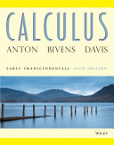

MATH 101
Calculus I
Course Description: Functions, limits, and continuity and their applications: chain rule, implicit differentiation, related rates, increase decrease, concavity. Extrema. Newton's method, Roll's theorem, Mean-Value theorem, definite and indefinite integrations, fundamental theorem of calculus, area and volume, inverse functions, exponential and logarithmic functions with their derivatives. Conic sections.
Textbook: H. Anton, I. Bivens, and S. Davis, Calculus, Early Transcendental, 10th Ed (2012).
